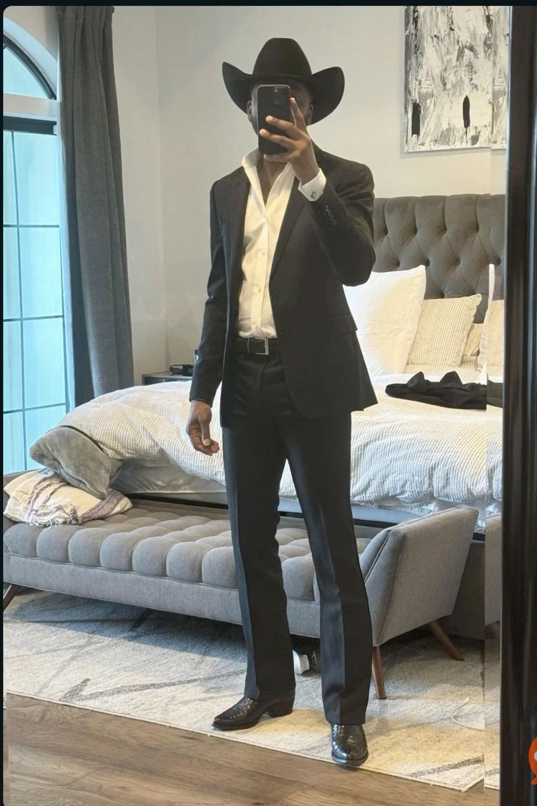
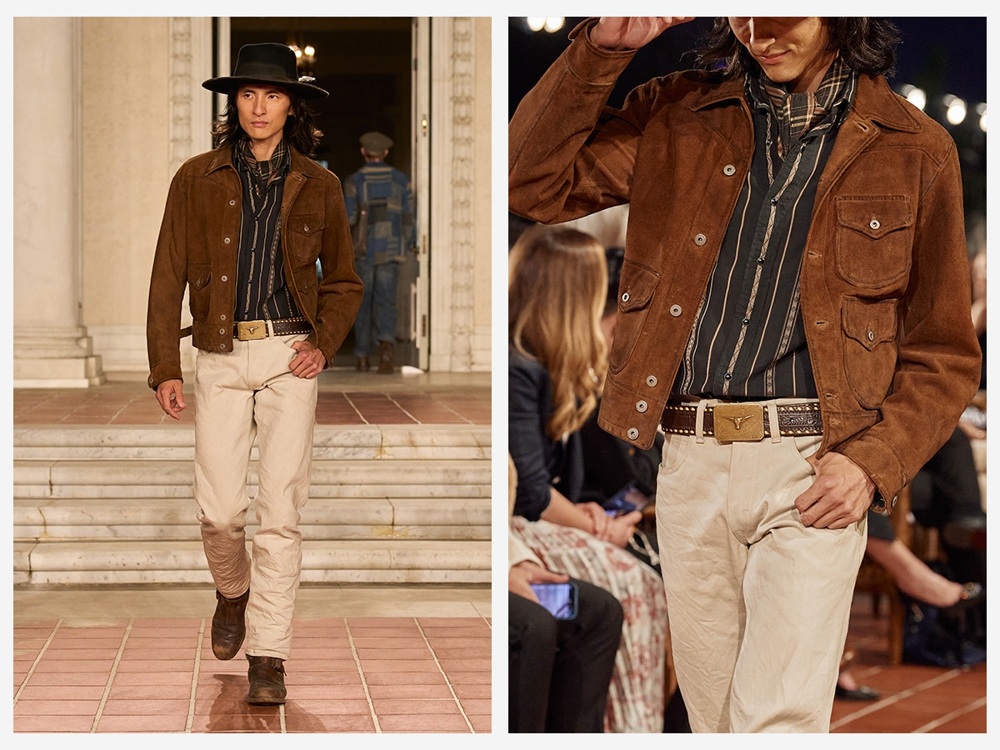
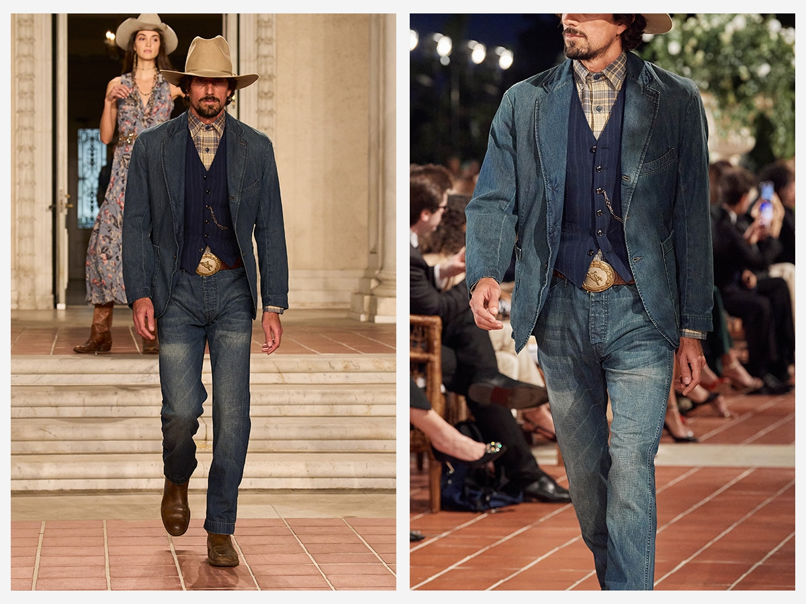
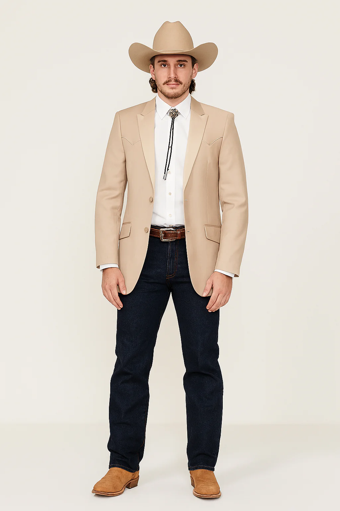
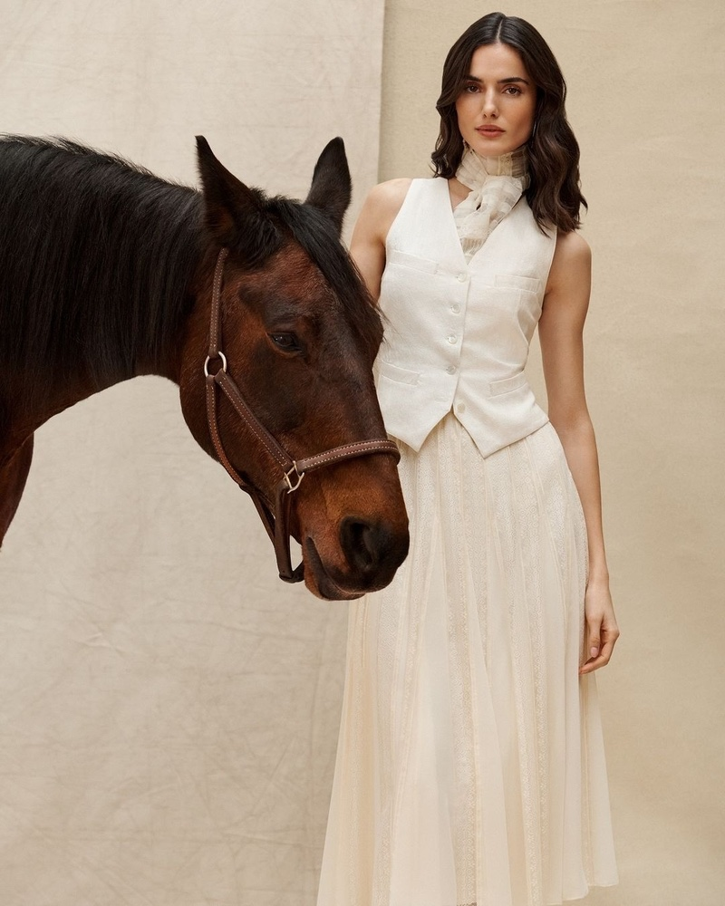
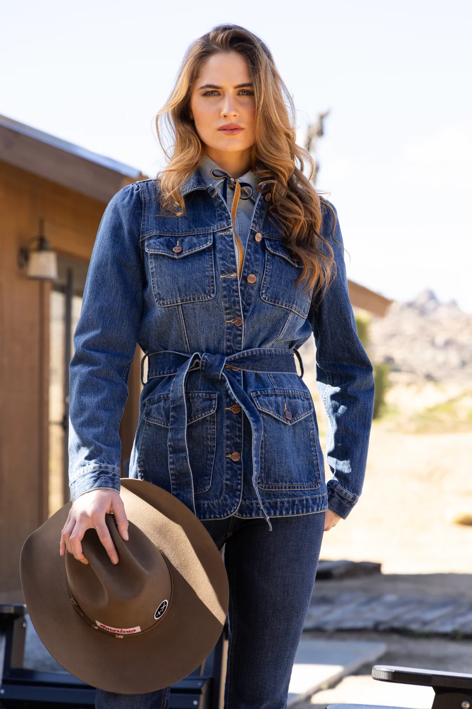
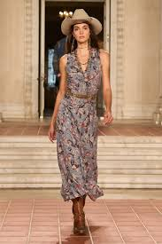
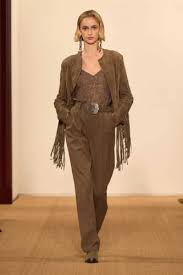
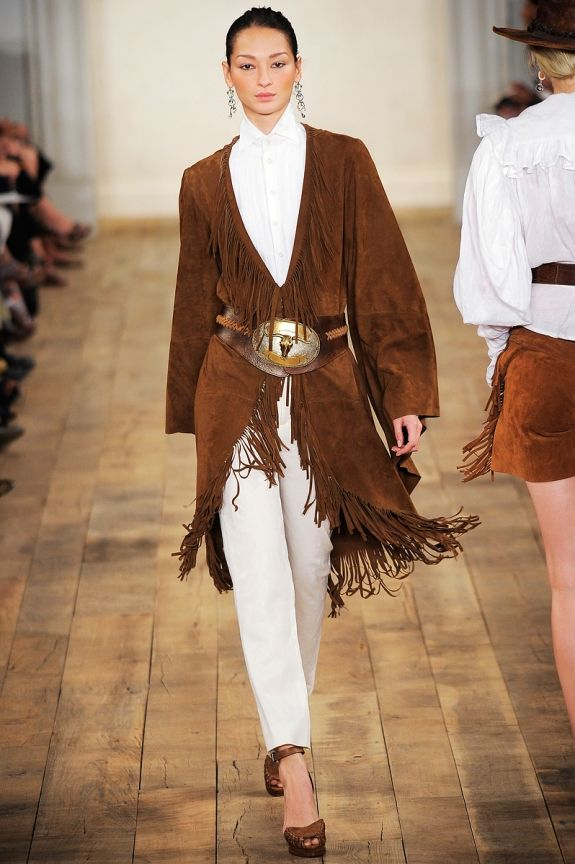
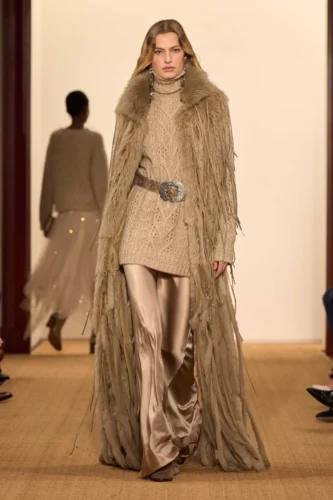

Men's Wardrobe

1. The Modern Cattleman
A sharp, contemporary take on ranch-ready layers that transition effortlessly from the field to the city.

2. The Black-Tie Rancher
A sharp black suit paired with a matching cowboy hat for high-stakes western elegance.

3. The Heritage Explorer
Layered textures of brown suede and striped cotton create a sophisticated, timeless frontier aesthetic.

4. The Indigo Legend
A classic denim-on-denim ensemble anchored by a structured blue v-neck and traditional felt hat.

5. The City Outpost
A versatile blend of structured tailoring and rugged denim, bridging urban style with western soul.

6. The Gentry Cowboy
A light tan blazer and bolo tie offer a refined, formal take on traditional ranch attire.
Women's Wardrobe

1. The Equestrian Muse
An ethereal cream vest and flowing skirt capture the graceful spirit of life on the range.

2. The Canyon Chic
Dark denim layers and a wide-brimmed hat provide a modern, feminine edge to rugged utility.

3. The Frontier Belle
A vintage-inspired paisley dress and leather boots evoke the timeless elegance of the prairie.

4. The Suede Sovereign
Rich, monochrome suede textures and long fringe details command attention with sophisticated western flair.

5. The Nomad Queen
A dramatic suede duster with heavy fringe over crisp white trousers for a bold, desert-inspired silhouette.

6. The Aspen Alpine
A luxurious cable-knit sweater and floor-length fur-trimmed coat for high-altitude elegance and warmth.